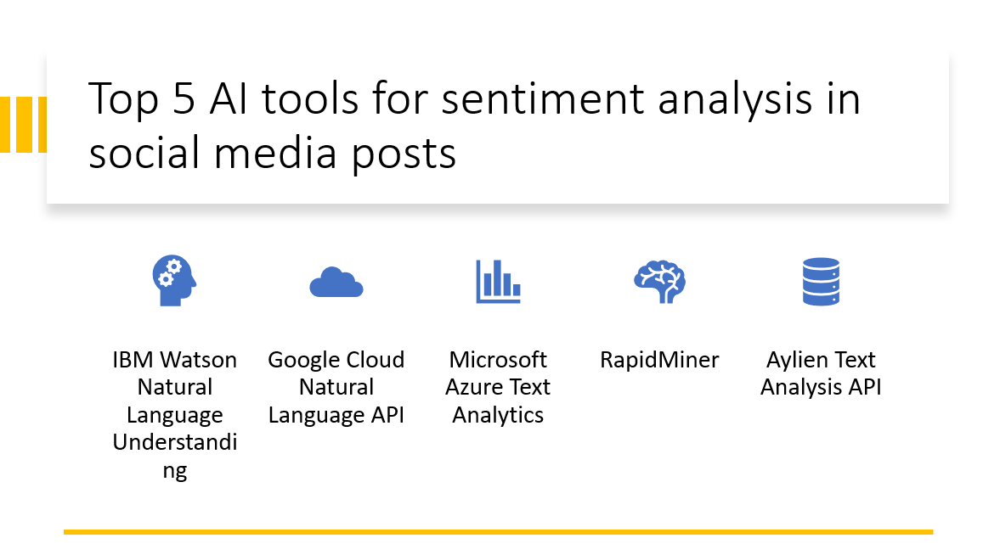

Introduction
Sentiment analysis plays a crucial role in understanding public opinions, customer feedback, and brand perception in the digital age. With the massive amount of data generated on social media platforms, Artificial Intelligence (AI) tools have become instrumental in analyzing sentiments expressed in social media posts. In this blog post, we will explore the top five AI tools for sentiment analysis, enabling businesses and organizations to gain valuable insights from social media data.
Why use one liner bullted point max 5 bullted poin
- AI tools provide immediate analysis of sentiment in social media posts.
- AI enables comprehensive sentiment analysis across large volumes of social media data.
- AI algorithms accurately classify sentiment, considering language nuances and slang.
- Sentiment analysis helps businesses understand customer satisfaction and make data-driven improvements.
- AI tools monitor sentiment around competitors, providing insights into market positioning.
Here Are Our Top 5 AI tools for sentiment analysis in social media posts:
1: IBM Watson Natural Language Understanding
Overview and Importance
IBM Watson NLU is an advanced AI tool for analyzing text data, particularly sentiment analysis. It provides valuable insights from social media, customer reviews, and other text sources, helping businesses understand public sentiment and make informed decisions. Watson NLU's capabilities enable brand reputation monitoring and sentiment-based decision-making.
Learn more about IBM Watson Natural Language Understanding
Key Features
Sentiment Analysis
- Watson NLU accurately gauges text sentiment, helping businesses understand the emotional tone of their content.
Entity Recognition
- The tool identifies and extracts entities mentioned in text, such as people, organizations, and locations, providing valuable contextual information.
Emotion Analysis
- Watson NLU analyzes the emotions conveyed in text, enabling businesses to gauge the emotional impact of their messaging and tailor it accordingly.
2: Google Cloud Natural Language API
Overview and Importance
The Google Cloud Natural Language API is a powerful AI tool provided by Google Cloud that offers natural language processing capabilities. It enables developers and businesses to extract valuable insights from text data, analyze sentiment, and understand the structure and meaning of text. The API leverages Google's vast language understanding capabilities to provide accurate and efficient natural language processing solutions.
Learn more about Google Cloud Natural Language API
Key Features
Sentiment Analysis
- The Google Cloud Natural Language API accurately analyzes text sentiment, providing insights into public opinion and customer feedback.
Entity Recognition
- The API identifies entities in text, such as people, organizations, and locations, enabling businesses to extract key information and categorize content.
Syntax Analysis
- The API parses text, providing detailed information about grammatical structure and word relationships, facilitating advanced analysis and understanding of the text.
3: Azure Text Analytics
Overview and Importance
Azure Text Analytics is a comprehensive natural language processing (NLP) service provided by Microsoft Azure. It enables businesses to extract valuable insights from text data and gain a deeper understanding of customer sentiment, opinions, and key information. The service uses advanced AI algorithms to analyze text and provides various NLP capabilities to developers and organizations.
Learn more about Azure Text Analytics
Key Features
Sentiment Analysis
- Azure Text Analytics offers accurate sentiment analysis, helping businesses understand the sentiment expressed in text data.
- The service extracts key phrases and meaningful entities from text, aiding in content summarization and categorization.
Named Entity Recognition
- Azure Text Analytics recognizes and classifies named entities in text, such as people, organizations, and locations, enhancing information extraction and contextual understanding.
4: RapidMiner
Overview and Importance
RapidMiner is a leading data science platform that allows organizations to easily build and deploy advanced analytical models. It provides a comprehensive set of tools and functionalities for data preparation, machine learning, and predictive modeling. RapidMiner enables businesses to leverage their data effectively and gain valuable insights for informed decision-making.
Learn more about Azure Text Analytics
Key Features
Data Preparation
- RapidMiner provides tools for data cleaning, transformation, and preprocessing to ensure high-quality data for modeling.
Machine Learning
- The platform offers a rich set of machine learning algorithms for building predictive models and optimizing model performance.
Visual Workflow Designer
- RapidMiner's visual interface enables users to create and manage complex data analysis processes without extensive programming knowledge.
5: Aylien Text Analysis
Overview and Importance
Aylien Text Analysis is an AI-powered text analysis platform that enables businesses to extract valuable insights and perform in-depth analysis on textual data. It leverages natural language processing (NLP) and machine learning techniques to understand and interpret the meaning, sentiment, and entities within text. Aylien Text Analysis plays a crucial role in gaining a deeper understanding of textual data and making informed decisions based on its analysis.
Learn more about Aylien Text Analysis
Key Features
Sentiment Analysis
- Aylien Text Analysis determines sentiment in text, providing insights into positive, negative, or neutral sentiment expressed.
Entity Recognition
- The platform identifies and extracts entities in text, such as people, organizations, and locations, aiding in information extraction and categorization.
Topic Classification
- Aylien Text Analysis classifies text into predefined topics, helping businesses organize and analyze textual data to identify patterns and trends.
Conclusion
Sentiment analysis tools, such as IBM Watson NLU, Google Cloud Natural Language API, Azure Text Analytics, RapidMiner, and Aylien Text Analysis, provide businesses with valuable insights into customer sentiment, brand reputation, and emerging trends. By leveraging AI-driven sentiment analysis, businesses can make data-driven decisions, respond effectively to customer needs, and stay competitive in the digital landscape. It is recommended to explore these tools to choose the one that best fits specific requirements and objectives.